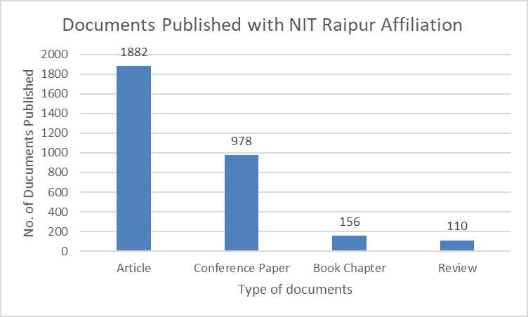
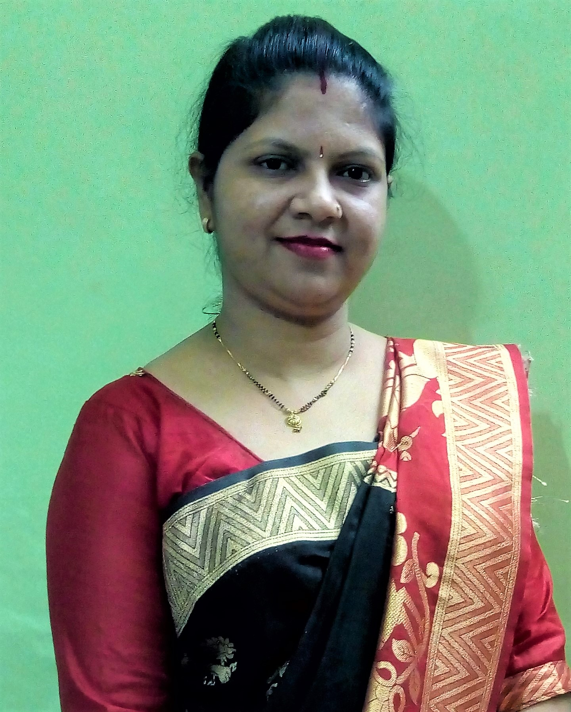
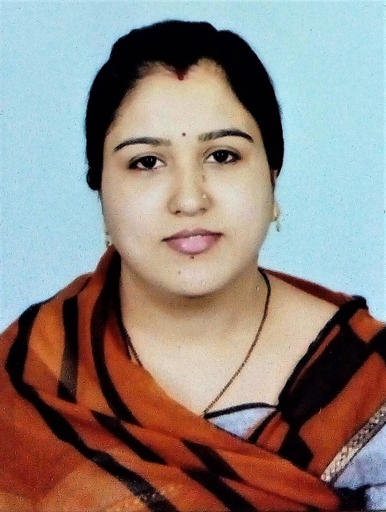
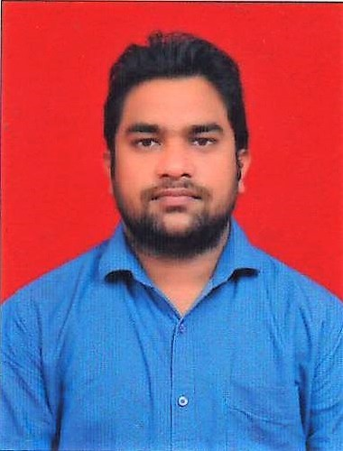

RESEARCH & CONSULTANCY - NIT RAIPUR
NIT Raipur strives its best to position itself at the forefront of cutting-edge research in pace with global standards. Research activities at NIT Raipur have been growing in all metrics with respect to the quantity and quality of researchers.
There are several sponsored projects currently funded by Sponsored Research at NIT Raipur is mostly supported by the funding agencies viz. DST, DBT, DeitY, CSIR, CPRI, MNRE, ICMR, DAE-BRNS, DRDO, Space Application Centre (SAC- ISRO), IRDE, DST-TBD, DST-ICPS, NBHM DAE, CCOST, and IEI, various other Ministries of Govt. of India. The other Govt./non-Govt. organizations, industries and international funding agencies like Human Settlement Management Institute, Revenue & Disaster Management Dept., C.G. Govt, PHED, State Council of Education Research & Training Raipur, CECB, BALCO, NMDC, NSU, RUS/ RFBR, DST (India-Taiwan), NCSU, USA Partnership Program, Royal Academy of Engineering, UK etc., have also contributed in the sponsored research over the years. In addition to this, major consultancy projects with agencies like CPW, PWD, NMDC, BALCO, are also undertaken across different departments of the Institute.
In addition to this, the research community of the institute actively engages in translating novel ideas to a product/process and has several published patents and granted one patent to its credit.
In this spirit, the office of Dean (R&C) has been set up to dedicatedly accelerate the research activities in the campus. The Office of R&C meticulously works in improvising the interaction of the institute with other academic and Industrial agencies through different MoUs. NIT Raipur has signed various MOUs with different agencies such as PGCIL, CPRI, NMDC, National Highway Authority of India (NHAI), CCOST, MSME, Jayaswal Neco Industries Limited, Raipur Cold Forge, Faridabad Vedanta Limited and various foreign universities viz. University of Calabria, Italy, Universidad Autónoma de Ciudad Juárez Mexico, Damghan University, Iran, National Ilan University Taiwan, University of Warwick, UK etc.. It has also excelled in facilitating the activities of incubating young entrepreneurs through Career Development Centre (CDC), guidance to researchers in filing patents through IPR cell. Apart from these activities, the Office of Dean (R&C) offers managerial support and guidance to all research & consultancy activities on the campus and maintains complete records of Sponsored, Consultancy and Institute Projects, workshops organized, etc.
- Dean (Research and Consultancy)

OFFICE OF THE DEAN
DEAN
Dr. Prabhat Diwan
Associate Professor
Department of Applied Geology
ASSOCIATE DEAN
Dr. Anamika Yadav
Associate Professor
Department of Electrical Engineering
OFFICE ASSISTANT
Mrs. Nidhi Sharma
Office of Dean (R&C)
ACCOUNTANT
Mr. Komal Prasad Gayakwada
Office of Dean (R&C)
LINKS
Format for approval of reimbursement for student participation in India
Format for reimbursement approval for student participation abroad
National/International Conference Policy
Research Seed Grant Policy
Closure Report for Seed Grant Project
Revised format of Organizing STTP / Workshop / Training Program.
STTP(SF):
Brochure
Certificate
Schedule